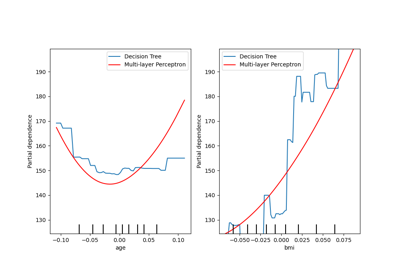
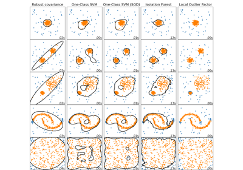
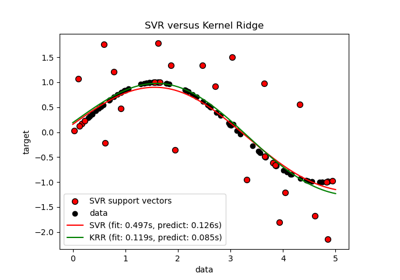
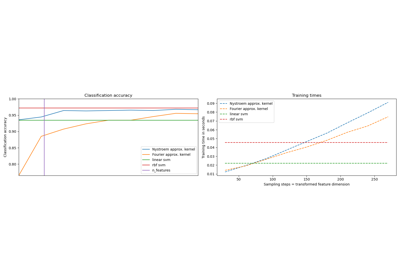
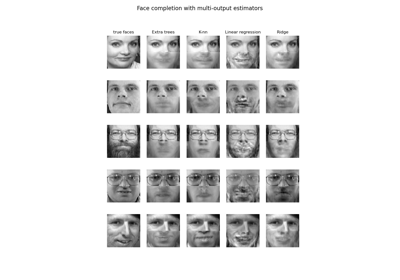
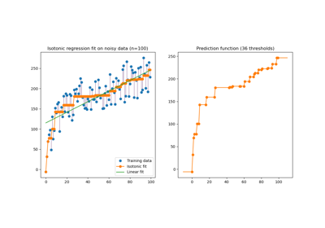
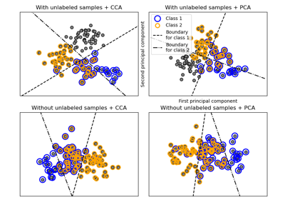
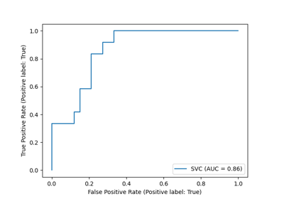
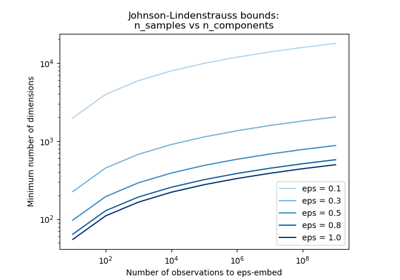

Miscellaneous¶
Miscellaneous and introductory examples for scikit-learn.

Advanced Plotting With Partial Dependence
Advanced Plotting With Partial Dependence


Comparing anomaly detection algorithms for outlier detection on toy datasets
Comparing anomaly detection algorithms for outlier detection on toy datasets

Comparison of kernel ridge regression and SVR
Comparison of kernel ridge regression and SVR



Explicit feature map approximation for RBF kernels
Explicit feature map approximation for RBF kernels

Face completion with a multi-output estimators
Face completion with a multi-output estimators

Isotonic Regression

Multilabel classification

ROC Curve with Visualization API
ROC Curve with Visualization API

The Johnson-Lindenstrauss bound for embedding with random projections
The Johnson-Lindenstrauss bound for embedding with random projections